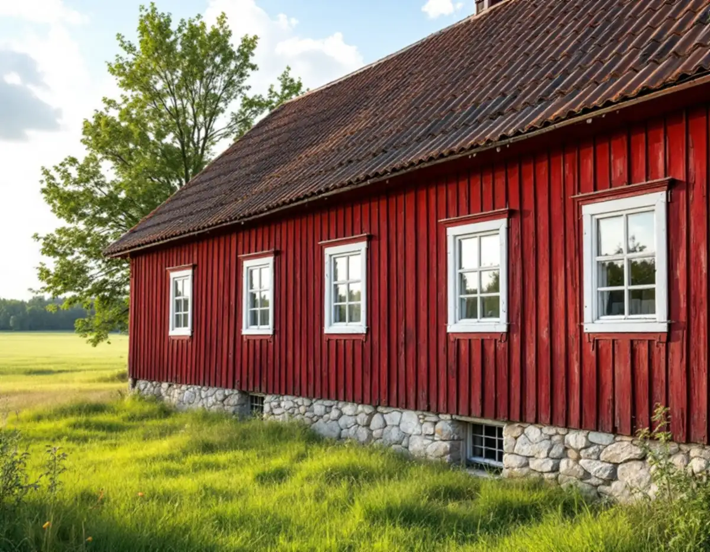
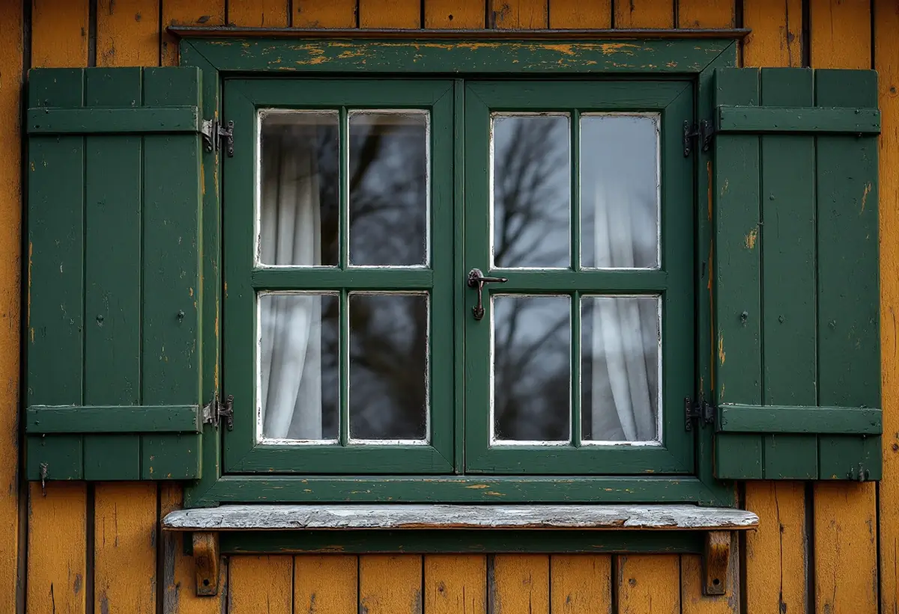

Rundvandring på gården
Vi går igenom fönstren i boningshuset och i uthusen och noterar skicket på vart och ett.
På en gård i Haninge har inte bara boningshuset fönster. Ladugård, förråd och andra uthus har sina egna, och de är lika värda att ta hand om. Geal Entreprenad AB renoverar fönster på Haninges gårdar och villor – vi lagar bågar och karmar, kittar, målar och ser över hur vattnet leds bort under fönstret.

Haninges kulturmiljöprogram, Haninges karaktärsmiljöer, har ett eget avsnitt om att värna den agrara miljön. Under rubriken renovering och underhåll skriver kommunen att befintliga byggnader ska hållas i vårdat skick och att ursprungliga karaktärsdrag och detaljer ska värnas. Fönster och dörrar beskrivs som något med starkt karaktärsbärande effekt, och vid renovering och underhåll bör de ursprungliga fönstren i möjligaste mån bevaras. Måste ett fönster ändå bytas ska ursprunglig utformning eftersträvas.
Liknande råd finns för villorna. I egnahemsområdena från 1910–1940-talen, med exempel i Tungelsta, Vendelsö, Vendelsömalm, Handen, Västerhaninge och Norrby, nämner programmet träpanel och enkelt spröjsade fönster bland de tongivande dragen och råder att husens ursprungliga arkitektoniska uttryck värnas. För folkhemsbyggets småhus från 1940–1960-talen skriver kommunen att dörrar och fönster är en bärande del av byggnadens karaktär och att deras ursprungliga utformning och färgsättning ska vara utgångspunkt vid förändring. Vid bygglov som kan påverka kulturmiljöns värden ska enligt programmet en antikvarisk sakkunnig medverka.

Programmet beskriver hur landsbygdens byggnadstradition rymmer flera komplementbyggnader för olika funktioner, som i regel står fristående från bostadshuset. Om ladugårdarna skriver kommunen att en ny typ började byggas på landsbygden mellan 1890 och 1940. De var rationellt byggda med målade fasader, tegeltak och spröjsade fönster, och fasadens detaljer skiftade med tiden från schweizerstil till nationalromantik. Vi ger därför uthusens fönster samma omsorg som boningshusets, även när rotavdraget inte följer med.
Mittposten fyller både en estetisk och en praktisk roll. För nya byggnader råder kommunen att ta efter den äldre traditionen, med symmetriskt placerade fönster i kvadratiskt eller stående format, och betonar att mittposten är en viktig del av fönstrets uttryck. Riksantikvarieämbetet förklarar varför: mittposten behövs i klenare fönsterkonstruktioner som stängs med fönsterhakar, men kan ersättas om fönstret stängs med spanjolettbeslag. Vid en renovering behåller vi därför mittposten och lagar hakar och gångjärn i stället för att bygga om bågarna.
Nedtill behöver ett fönster någon form av vattenavledning som skyddar fasaden. Riksantikvarieämbetet skriver att det på trähus förr var vanligt att helt enkelt sätta en snedställd bräda som vattenavvisare, medan de större stenhusen tidigt fick bleck av järnplåt. På ett gammalt gårdshus i trä kan det alltså vara mer rätt att laga eller göra om brädan än att sätta dit ett nytt plåtbleck.
Länsstyrelsernas informationsblad om målning utomhus på trä påminner om att fönster och dörrar behöver målas om oftare än fasader, och söderfasader oftare än de andra. Bladet avråder från blästring och maskinslipning, som skadar träet, och från högtryckstvätt, som pressar in vatten i väggen. Plastfärg förenas inte med underlaget utan bildar en hinna som måste bort innan linoljefärg kan användas. Om kulörerna skriver bladet att färgskalan blev dovare under 1800-talets andra hälft och att fönstren då ofta målades i rött, brunt eller grönt.
Om du hellre vill ha nya fönster i gårdens hus, läs om fönsterbyte i Haninge. Kulörer för fasad och snickerier tar vi upp under målare i Haninge.
Vi går igenom fönstren i boningshuset och i uthusen och noterar skicket på vart och ett.
Bostadshus och ekonomibyggnader hålls isär, så att det syns vad som kan ge rotavdrag.
Lagning, kittning och målning anges för varje byggnad.
Ruttet virke skarvas, och mittpost, hakar och gångjärn behålls och lagas.
Brädan eller blecket under fönstret ses över och görs om vid behov.
Bågar och karmar målas i tunna lager, gärna i husets ursprungliga kulör.
Skatteverket räknar att reparera eller byta ut fönster och att måla fönster som rotarbete i ett småhus, och komplementhus som garage och förråd räknas som en del av bostaden. Ligger ditt hus på en lantbruksenhet gäller en snävare regel: avdrag ges bara för arbete i bostadsbyggnaden och på tomten runt den, inte för arbete på ekonomibyggnader eller utanför tomten.
Avdraget är högst 30 procent av arbetskostnaden, som mest 50 000 kr per person och år och högst 75 000 kr ihop med rutavdrag. Det är bara arbetad tid på plats hos dig som räknas, inte material eller resor. Vi drar avdraget direkt på fakturan.
Antalet fönster i boningshus och uthus, hur mycket virke som behöver lagas, om plastfärg ska bort och om bräda eller bleck ska göras om väger tyngst. Efter ett gratis platsbesök får du ett skriftligt kostnadsförslag där bostadshus och ekonomibyggnader står var för sig.
Byta eller renovera fönster.
Fönsterbyte i Stockholm →Takbyte, takbesiktning och plåtarbeten.
Takläggare i Haninge →Dalarö, Vendelsö och Brandbergen.
Takrenovering i Haninge →Skjutfält, kulturmiljö och skärgårdstomter.
Attefallshus i Haninge →Vakuumtoalett, sluten tank och öarna.
Badrumsrenovering i Haninge →Nytt hus och tillbyggnad i omvandlingsområden.
Byggföretag i Haninge →Mustiga 50-tal och pastell.
Fasadmålning i Haninge →Tegelvillor, grupphus och panelade gårdar.
Fasadrenovering i Haninge →Sportstugor och fönster i skärgårdsväder.
Fönsterbyte i Haninge →Egnahem, sportstugor och hus i sluttning.
Golvläggare i Haninge →Laga och slipa trägolvet i villan.
Golvslipning i Haninge →Egnahem, grupphus och Dalarö.
Köksrenovering i Haninge →Egnahem, grupphus och sommarvillor i Haninge.
Målare i Haninge →Falsad plåt, sjöbodar och beslag i Haninge.
Plåtslagare i Haninge →Verandor, altaner och skärmtak.
Snickare i Haninge →Kontrollplan och riskbedömning vid takbyte.
Takbyte i Haninge →Ny tapet och gamla lager i äldre villor.
Tapetsering i Haninge →Lov, situationsplan och kontrollplan.
Tillbyggnad i Haninge →Folkhemsvillan inifrån.
Totalrenovering i Haninge →